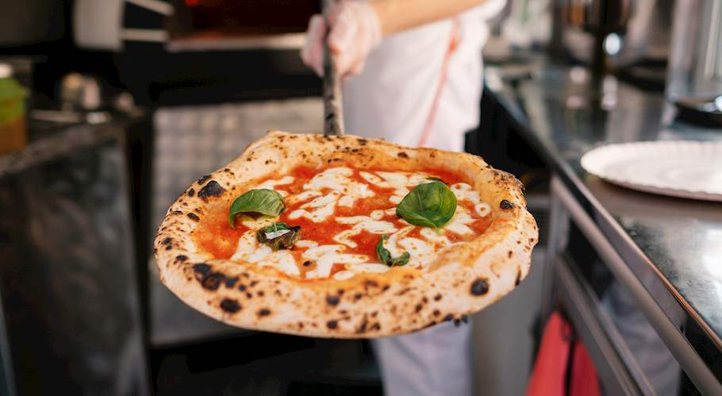

PIZZA MARGERITHA
DESCRIPTION
The recipe is the one codified by Associazione Verace Pizza Napoletana (VPN Association), meaning only pizzas prepared in this manner can hold the denomination "original Neapolitan pizza". One pizza is one serving, and the number of pizzas that can be made with the amounts stated here ranges from eight to eleven, depending on the amount of flour the water absorbs, which changes daily. That said, if you are not making a huge batch, half a liter (2 1/4 cups) of water makes for approximately five to seven pizzas, so adjust the amounts accordingly. If you do not own a wood-fired oven but want good results, apply the suggestions from our "at-home preparation" tip.
INGREDIENTS
10 SERVINGS
MAKING THE DOUGH
- 1 L (4 1/4 cups) water
- 40 – 60g (1.4 - 2.1 oz) salt
- 3g (1/2 tsp) fresh yeast
- 1,6 –1,8 kg (13 1/3 - 15 cups) flour, 00 type (or, all-purpose)
THE TOPPING
- 60 – 80g (2.1 - 2.8 oz) canned, peeled tomatoes
- 6 – 7g (1 1/2 tsp) virgin or extra virgin olive oil
- 80 – 100g (2.8 - 3.5 oz) mozzarella/fior di latte
- a few fresh basil leaves
- 5 – 7g (1 1/2 tsp) hard cheese (grated), optional
PREPARATION
- Step 1/3
- Step 2/3
- Step 3/3
- Step 1/3
- Step 2/3
- Step 3/3
- Step 1/3
- Step 2/3
- Step 3/3
- Step 1/3
- Step 2/3
- Step 3/3
- Step 1/3
- Step 2/3
- Step 3/3
- Step 1/1
1 | MAKING THE DOUGH
Dissolve salt in water, then add the yeast to the water and dissolve. Immediately add a portion of the flour to the water and mix. Add the remaining flour in batches, gauging how much flour is enough.
Knead for a minimum of 15-20 minutes, but ideally, 30 minutes — the dough is of ideal consistency when it's a bit sticky on the hands, and on the sides of a bowl, you're mixing it in.
Shape it into a ball, then lightly coat with flour, to prevent losing moisture as it rises.
2 | FERMENTING THE DOUGH
Place the dough in a large bowl, then cover it with a cloth and store it in a warm place for two hours.
After two hours have passed, shape the dough into balls weighing either 200 or 280 grams (7-10 oz), depending on the size of the pizza you're making — a 22-24 cm (8.6-9.4-inch) or a 28-35 cm (11-13.5-inch) one.
Once you've shaped the balls, place them all on a plate and cover them with a damp cloth and let them prove for a minimum of six hours.
3 | SHAPING THE DOUGH
Once at least six hours have passed, take a ball of dough, place it on a lightly floured surface.
Pressing on the ball of dough with the thumbs of your fingers, starting from the center and going towards the edges, shape into a disc, turning the dough several times in the process.
As a result of this action, you should end up with a disc that has about a 1-2 cm (1/2-inch) raised rim with a center that should be approximately 0.3 cm (1/8-inch) thick.
4 | THE TOPPING
Arrange the topping (the listed amounts are for a single pizza) as follows; First, place the crushed, peeled tomatoes in the center of the pizza, then spread them with a spoon all over, except the rim, in a spiraling fashion.
Next, scatter the mozzarella or fior di latte evenly over the surface, followed by a sprinkling of hard grated cheese, if you're using it.
Place a few basil leaves on top, and to finish, drizzle with extra virgin olive oil, which should be applied in a circular motion, starting from the center outwards.
5 | BAKING
Place the pizza on a pizza peel and then slide it into a wood-fired oven with a quick wrist motion, so the topping stays in place.
Bake for 60-90 seconds in a wood-fired oven at a temperature of about 485°C/905°F, checking the doneness by carefully lifting the edges of the pizza.
Also, the pizza should be rotated as it bakes but kept in the same cooking area, so every part gets baked evenly.
6 | WHEN DONE
The finished pizza should have a thick tomato sauce, with melted mozzarella and basil leaves that have browned but are not burnt.